課後複習首頁第 4 次｜認知取向學習理論
認知取向學習理論：訊息處理、記憶策略與大腦
前三次上課談的都是發展理論；這次進入學習理論，先從認知取向開始。內容依序為：把人腦比作電腦的訊息處理模式，包括感官收錄器、工作記憶與長期記憶的特性；與記憶有關的處理層次論、雙碼理論與多媒體學習認知理論；人為什麼會遺忘；可以幫助記憶的研讀策略與記憶術；後設認知；以及教育神經科學的基本概念。最後開始介紹行為取向學習理論：學習的定義、Pavlov 的古典制約與 Watson 的小艾伯特實驗。
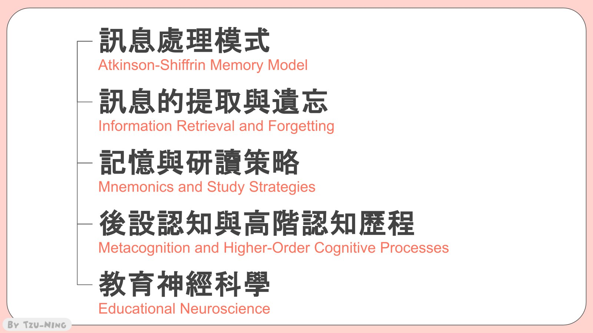
訊息處理模式：把人腦比作電腦
前幾次談發展理論時曾提到，當時心理學的主流是行為學派，只看外顯、可觀察的結果，另一大派則是精神分析。認知取向的學者認為，大腦裡面在想什麼，這個「黑盒子」仍然要打開來看。電腦發明之後，有學者把人腦比作電腦，提出訊息處理模式（information processing model），其中最常被引用的是 Atkinson 與 Shiffrin 的記憶模式。
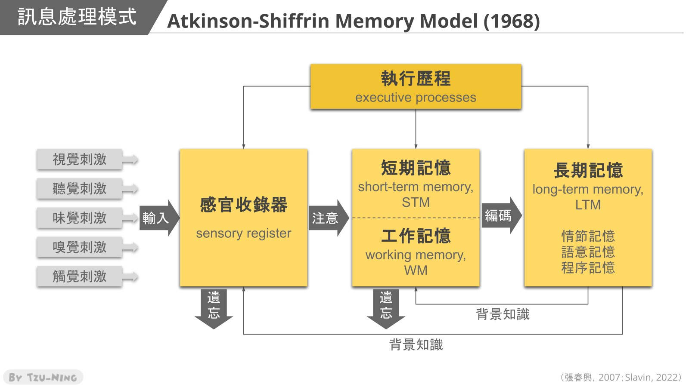
這個模式描述訊息在大腦中流動的路徑：外界的刺激（視覺、聽覺、味覺、嗅覺、觸覺）先進入感官收錄器，經過注意才會進入短期記憶／工作記憶，再經過編碼才有機會進入長期記憶。任何一關沒有通過，訊息就會遺失（loss），也就是遺忘。上方的執行歷程像中央處理器，負責監控這三個部分的運作。
其中工作記憶特別忙碌：它處理的訊息可能剛從感官進來，也可能是從長期記憶提取出來的背景知識，兩者常常同時發生。這也說明了為什麼教新的內容之前，要先喚起學生的先備知識：讓舊知識被提取到工作記憶裡，和新訊息一起處理。
感官收錄器與注意力
感官收錄器（sensory register）保留訊息的時間非常短。訊息要繼續往下處理，需要兩個歷程：注意（attention）負責選擇要處理哪些訊息，知覺（perception）則是對訊息加以解讀、賦予意義。日常生活中「有看沒有到」的經驗，就是看到了，卻沒有注意，訊息也就不會進入下一層處理。
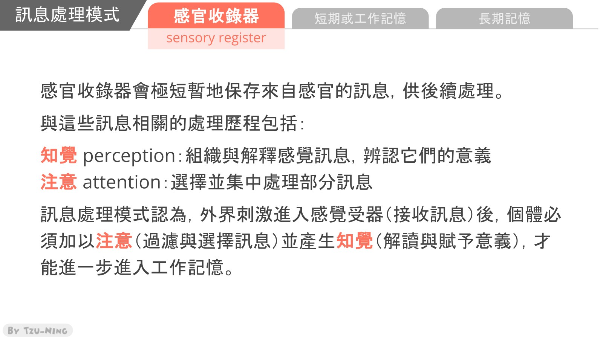
感覺記憶的例子很常見：聲音停止後，仍能短暫保留剛才的聲音；手機通知一閃而過，畫面消失的瞬間仍留有文字外觀的印象。研究感覺記憶的經典實驗是 Sperling 的字母矩陣實驗：螢幕先出現一個「＋」引導注視中央，接著極短暫地閃現 3×3 的字母矩陣，請受試者回想看到哪些字母。課堂以模擬的方式讓大家體驗。
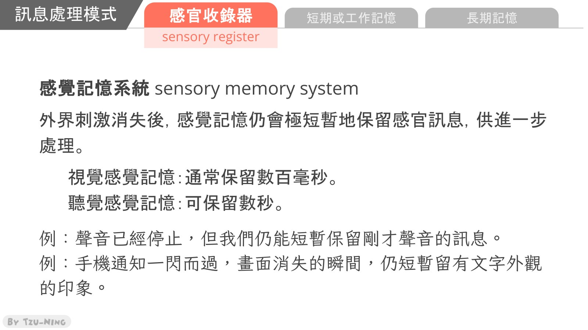
引起學生注意的方法
既然只有被注意到的訊息才能往下處理，教學上的第一步就是引起學生的注意。課堂討論的方法包括：播放短片、口令或手勢、倒數計時、指派小任務，以及「這裡會考」「等一下會點人回答」等提示。需要區分的是，有些方法只是讓學生注意到老師，教學更需要的是讓學生注意到老師提供的訊息。
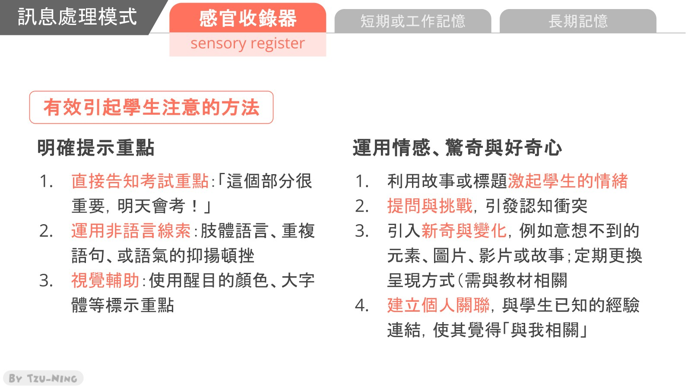
投影片列出的方法中有兩點值得留意。第一，當整頁都是文字時，可以用醒目的顏色或大字標出重點句，學生即使其他部分看不懂，也知道最該看哪一句。第二，用影片、故事或製造認知衝突來吸引注意時，內容必須與教學相關：與教學無關的有趣影片，學生看完只會記得影片好玩，反而成為分散注意力的無關材料。
工作記憶：容量有限
短期記憶與工作記憶是彼此相關、但不完全相同的概念。短期記憶主要指短時間保留訊息；工作記憶則強調在暫時保留訊息的同時，也能操作訊息，以完成理解、推理或解題等工作。本單元為了介紹訊息處理歷程，會一起討論這兩個概念。工作記憶非常忙碌，但容量有限。
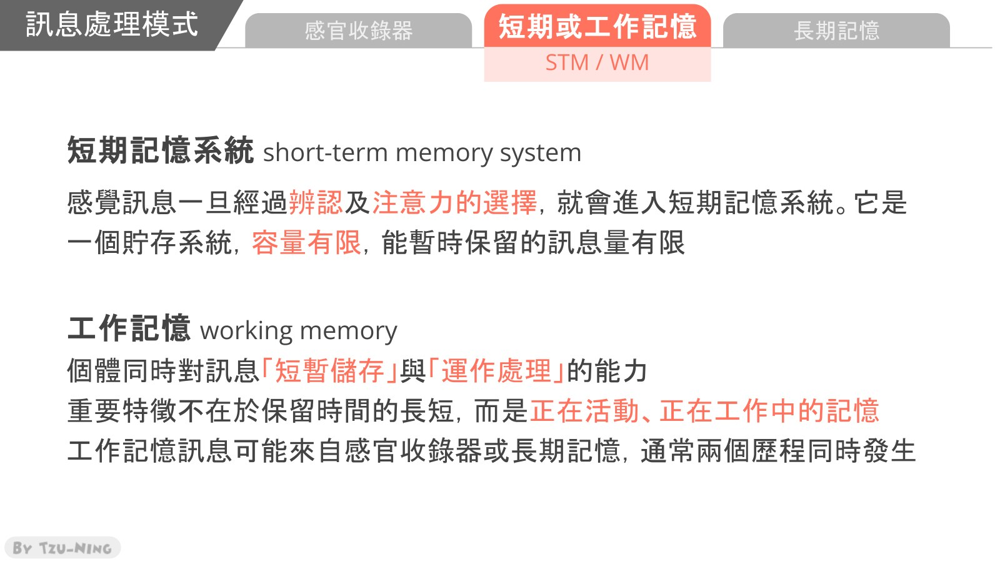
選擇性注意：為什麼沒看見大猩猩
課堂播放一段撲克牌變色的魔術影片，請大家找出魔術的破綻。多數人專心盯著牌，卻沒發現影片中人物的衣服、背景與桌布都換過了。這段影片是向「看不見的大猩猩」研究致敬：受試者專心數籃球的傳球次數時，許多人沒有發現一個穿著大猩猩裝的人從畫面中間走過。這些例子說明選擇性注意：認知資源有限，注意力集中在某處時，其他訊息就容易被忽略。對此有興趣，可以閱讀《為什麼你沒看見大猩猩？》一書。
同樣的道理也適用在簡報設計。投影片上與教學無關的動畫或圖片，研究上稱為誘人細節（seductive details），會分散注意力、占用有限的工作記憶容量，反而干擾學習。
神奇的 7±2 與意元集組
工作記憶的容量有多大？常用的測量方式是數字記憶廣度測驗（digit-span test）：聽完一串數字後依序複述，位數逐漸增加；也可以要求倒著複述（backward）。課堂實際玩了順向與逆向兩種。Miller（1956）整理立即記憶廣度等研究，指出在某些測量情境中，人能立即回憶的單位約為 7±2，常被稱為「神奇的 7」。這個數字會受到材料、熟悉度與意元集組（chunking）影響，不代表所有情況下的工作記憶容量都是 5 到 9 個單位。
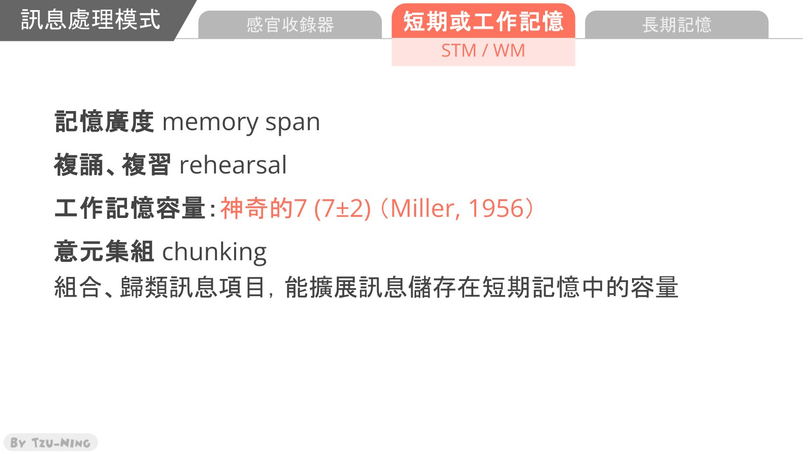
不過，記憶數字的人常會把數字三個三個串在一起，或轉成對自己有意義的數字。例如把 921543 記成「921」和「543」，對他而言就不是六個單位，而是兩個意元集組（chunks）。12 個英文字母 F-B-I-C-I-A-N-Y-P-D-P-C 個別記憶很困難，組成 FBI、CIA、NYPD、PC 之後就只剩 4 組。教學生記憶時，也可以引導他們把有意義的部分串在一起。
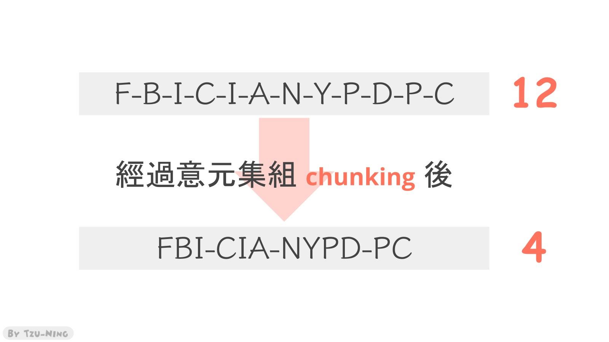
Cowan 的 4±1
正因為數字太容易被組成意元集組，有研究者改用難以分組的材料，例如視覺陣列記憶測驗：畫面短暫出現一組不同顏色的方塊，消失後詢問某一格是什麼顏色。課堂從 3 格、4 格、7 格一路玩到 12 格。Cowan（2001）整理相關研究後提出，當研究設法排除複誦與既有意元集組等因素時，注意焦點中可同時維持的單位約為 4 個。這是特定研究條件下的估計，不能和 Miller 的記憶廣度直接視為同一種測量結果。
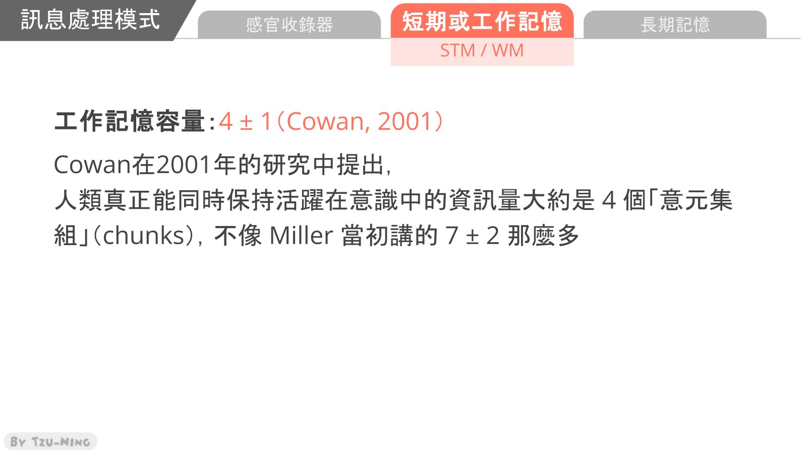
這提醒我們，學生同時處理訊息的能力有限。教學者可以視內容難度與學生已有知識，適度分段、標示重點，並協助學生將相關訊息組織成有意義的單位。
自動化：釋放工作記憶的空間
既然工作記憶容量有限，就要設法把空間釋放出來，最常見的方式是自動化（automatization）：原本很費力的技能，經過練習後幾乎不需要投入注意力就能完成。例如剛學騎腳踏車時，要同時顧平衡、緊握把手，連旁人說話都無暇回應；騎到自動化之後，一踩就出去，不再占用工作記憶的資源。自動化有好處，也有壞處：進入「自動駕駛模式」時，有時做完了事情，自己卻沒有意識到。
要達到自動化，需要練習，但不是一直練習就行：要正確地練習（一直練錯的也沒有用）、有回饋，並且分散練習。
閱讀是一個好例子。剛學認字的小朋友，認字本身就很費力；若同時還要理解文章，工作記憶會被塞滿。等到認字自動化，就能把認知資源都投入閱讀理解。因此學生讀不懂文章時，問題可能不在理解，而是連認字都還很吃力，工作記憶已經被占滿了。
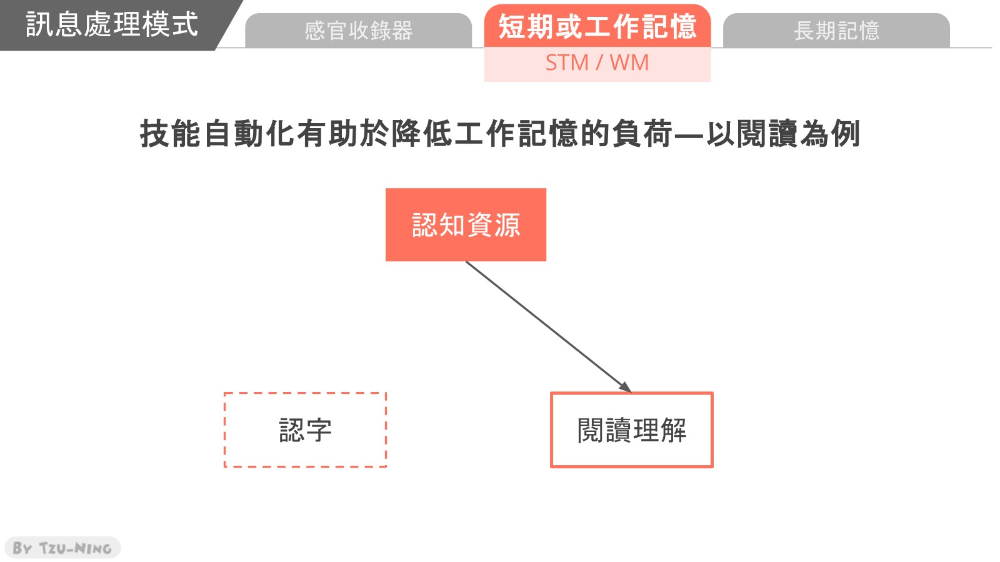
長期記憶與三種知識
訊息在工作記憶中經過編碼後，才有機會進入長期記憶，也就是一般所說的「知識」。長期記憶的容量非常大，甚至有人說幾乎無限，保存時間也很長。之所以有時想不起來，是因為缺乏合適的提取線索；長期不提取的記憶，最後也可能遺失。動畫電影《腦筋急轉彎》（Inside Out）中，沒有人再提取的記憶逐漸消失，就是這個概念的寫照。
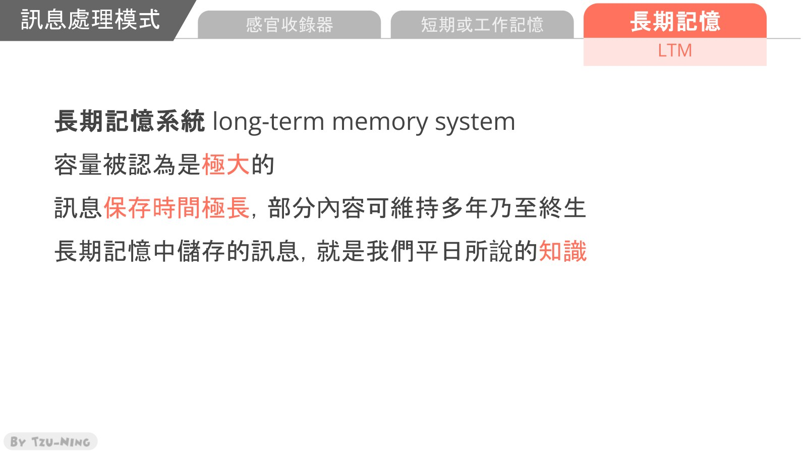
長期記憶中的知識可以分成三類：陳述性知識、程序性知識與條件性知識。
陳述性知識：情節記憶與語意記憶
陳述性知識（declarative knowledge）是關於「是什麼」（knowing that）的知識，屬於外顯記憶，包括情節記憶與語意記憶。
情節記憶（episodic memory）是個人親身經歷、有人事時地物、有畫面的記憶。例如問起 921 地震發生時自己在哪裡、在做什麼、接著做了什麼，許多人至今仍能生動地描述。像 921、911 這類特別鮮明、令人印象深刻的重大事件記憶，稱為閃光燈記憶（flashbulb memory），大多屬於情節記憶。
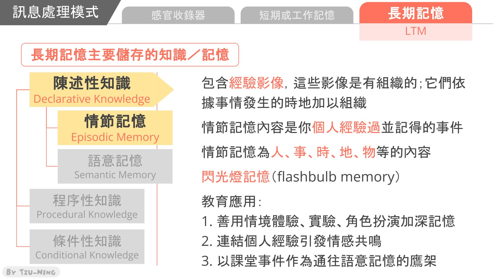
教學上可以善用情節記憶：透過體驗、實驗與角色扮演，讓學生之後說得出「那一次做了什麼、發生了什麼事」；或連結學生的個人經驗，讓學習內容有畫面感。不過，課本上的知識最終希望學生學會的是語意記憶，情節記憶是通往語意記憶的鷹架。
語意記憶（semantic memory）就是課本知識這一類。語意知識以網絡（network）的方式組織：每個概念是一個節點，稱為命題（proposition），節點之間有關係（relationship），串連起來就成為語意網絡，也就是有關這個概念的基模（schema）。這裡的基模與 Piaget 所說的基模（scheme）用法不太一樣。
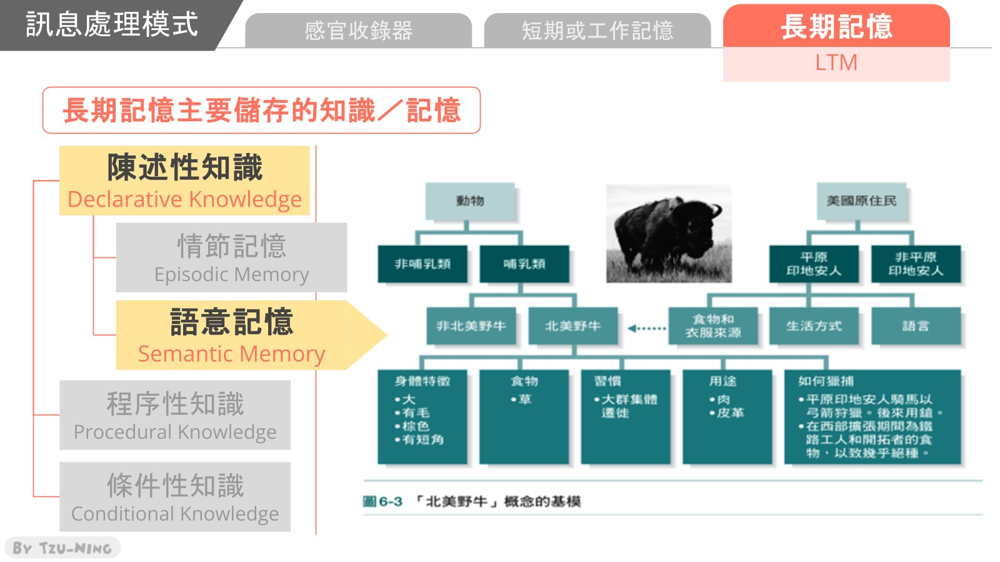
例如聽到「電燈泡」，多數人會想到「愛迪生」，而不會想到「門鎖」。這是因為在語意網絡中，愛迪生與電燈泡的距離比較近；一個概念被觸發時，網絡中鄰近的概念也容易被觸發。
程序性知識與條件性知識
程序性知識（procedural knowledge）是「知道如何做」（knowing how）的知識，例如騎腳踏車、打字、烘焙、刷牙的流程，屬於內隱記憶，以一系列「刺激與反應配對」的方式儲存。程序性知識只要多練習就容易自動化；也常聽人說，學會騎腳踏車後即使很久沒騎，一坐上去、踩到踏板，這些知識很快就會回來。
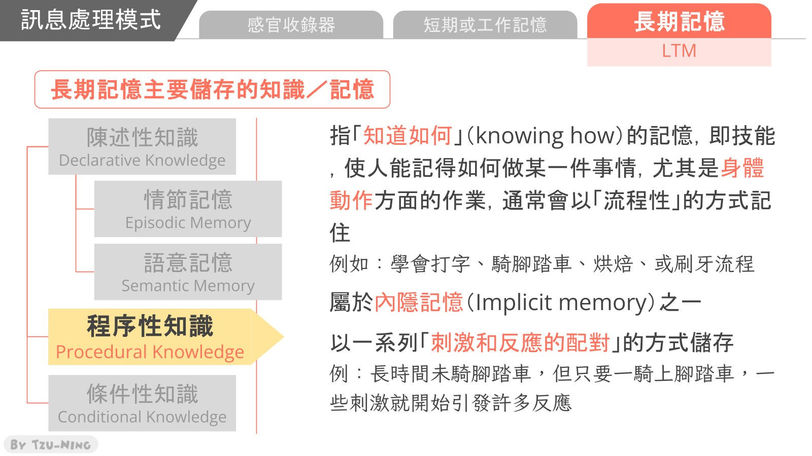
不同類型的記憶，與大腦不同部位的關係也不同：程序性記憶主要與小腦、基底核有關；語意與情節記憶的形成依賴海馬迴，並儲存在大腦皮質。
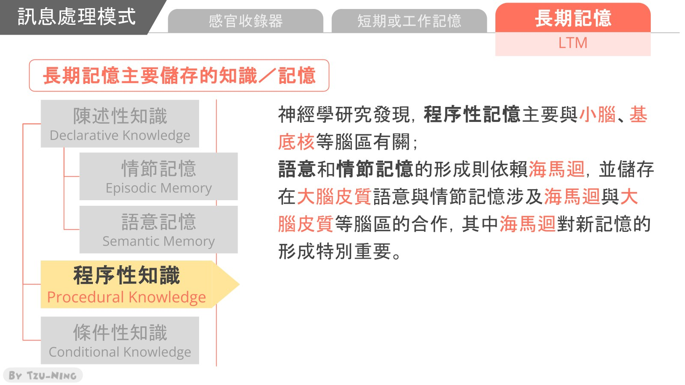
條件性知識（conditional knowledge）是「何時做」與「為何做」（knowing when and why）的知識：在特定情境下，判斷該選用哪一種知識或策略。
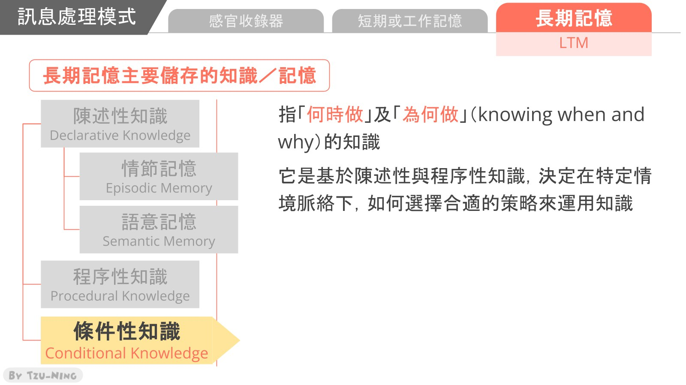
用一張圖複習訊息處理模式
課堂以填空的方式複習整個模式：外界的感官刺激輸入後進入感官收錄器；有注意的訊息才進入短期記憶（工作記憶）；在工作記憶中經過編碼，才有機會進入長期記憶；處理新訊息時，也需要從長期記憶提取背景知識到工作記憶一起處理。感官收錄器中沒有注意、工作記憶中沒有編碼的訊息，都會遺失。
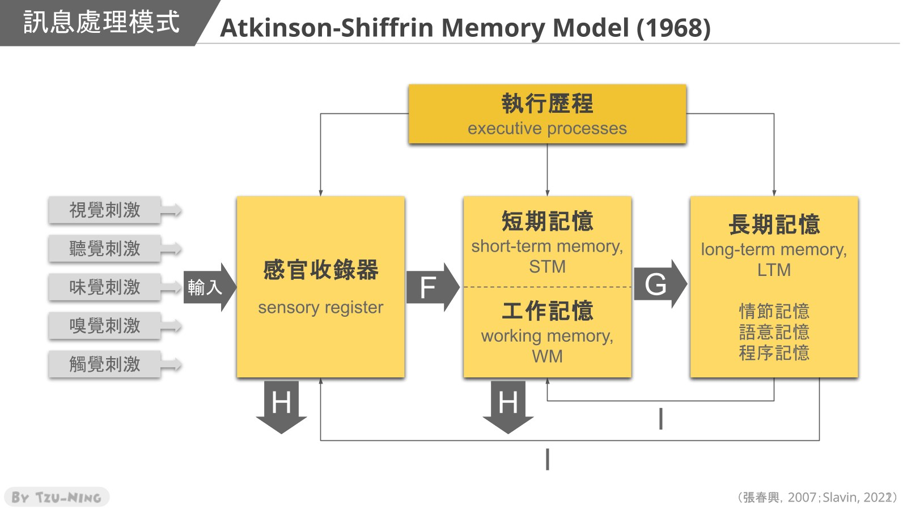
三種記憶的比較與案例分析
三種記憶可以從容量、保留時間、遺忘方式與例子來比較。這些數字在不同教科書中寫法不一，可作為大致的參考。
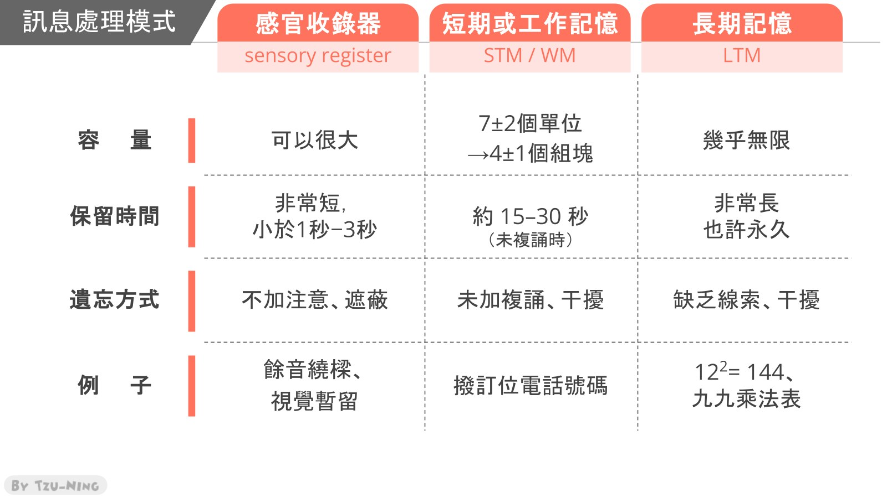
- 感官收錄器：容量其實可以很大，只是大部分沒有被注意到。例如走過一群人身邊，知道那裡有人，但沒有注意，就不知道是誰。沒有注意，或感官被遮蔽，訊息就會消失。
- 短期／工作記憶：容量有限，投影片列出 7±2（Miller）與 4±1（Cowan）兩種估計，兩者是在不同研究條件下測得的。以前要撥電話時，會一直唸著號碼，這就是複誦（rehearsal），目的是讓號碼在工作記憶中停留久一點；一旦不再複誦，號碼很快就會忘記。沒有複誦時，大約 15–30 秒就會遺忘。
- 長期記憶：容量很大、保存很久，但缺乏線索或受到干擾時就提取不出來。例如小時候背過的 12²=144、13²=169、14²=196，久沒用可能有點猶豫，一旦再次提取，又很快想起來。
如果學生考試時想不起上午學過的內容，可以用這個模式分析問題出在哪個階段：是一開始就沒有注意，訊息根本沒進入工作記憶？還是有注意、也在工作記憶中處理過，卻沒有經過編碼？討論案例、用自己的話說一說、角色扮演或想像，都是幫助編碼、把訊息送進長期記憶的方法。
阿倫、小傑與小琳
課堂請各組以訊息處理論分析三位學生的學習困難，並提出協助策略。
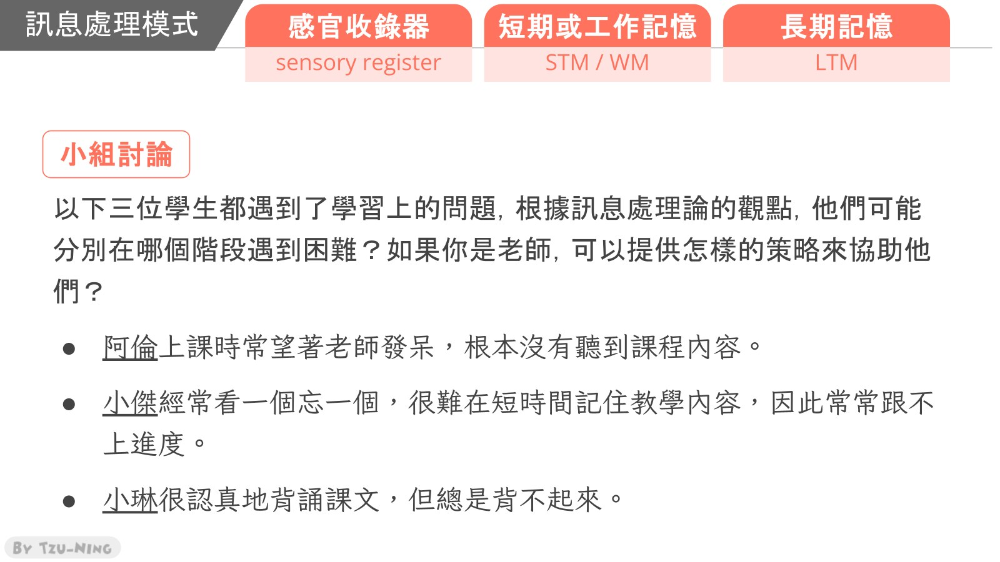
- 阿倫上課常望著老師發呆，問起內容卻說不出來：老師的聲音進入了他的感官收錄器，但他可能沒有注意到課程訊息；沒有被注意的訊息很快就消失，無法進入工作記憶。可以用與課程相關的提問或活動，幫助他把注意力放到重要訊息上。
- 小傑聽完後很快忘記內容：他可能有注意到訊息，訊息也進入了工作記憶，但工作記憶能同時處理的內容有限；如果沒有複習，或沒有和舊知識連起來，訊息就不容易編碼進長期記憶。可以把內容分段、連結舊知識，並隔一段時間請他試著回想。
- 小琳很認真背課文，卻總是背不起來：她可能一直在工作記憶中重複課文，卻沒有整理意思、建立聯結，因此訊息較難編碼進長期記憶，之後也不容易提取。可以請她分段理解、用自己的話說明，再練習回想；若圖像能呈現課文重點，也可以搭配使用。
處理層次論、雙碼理論與多媒體學習
處理層次論
課堂進行了一個英文字彙判斷的小實驗。畫面先出現「＋」（認知實驗通常先出現注視點，讓每位受試者的起始視線位置一致），接著出現問題與目標字，判斷「是」就拍手、「否」就拍桌。問題有三種：這個字是不是大寫（字形）、是否和某個字押韻（語音）、是不是動物（字義）。全部做完後，再請大家回想剛才出現過哪些目標字。
結果是：判斷字義的字最容易被想起來，語音其次，字形最少。判斷大小寫時，根本不需要管這個字是什麼意思；判斷是不是動物，則必須思考字的意義，處理層次比較深。這就是處理層次論（levels-of-processing theory）：處理層次越深的訊息，越容易被保留。
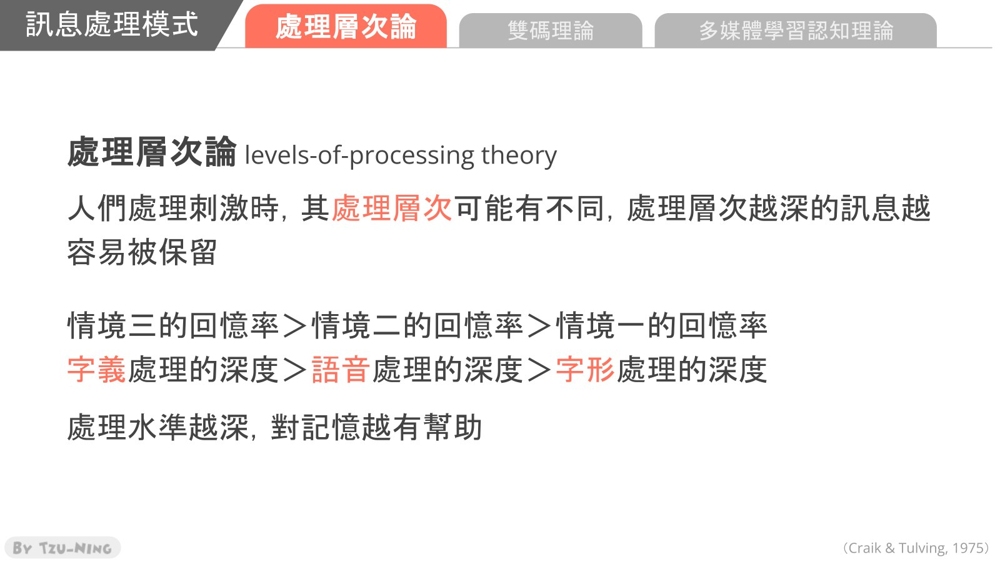
雙碼理論
雙碼理論（dual code theory）由 Paivio 提出，補充了訊息處理模式：訊息進入大腦後，是由兩套系統處理的，一套是語文（verbal）系統，一套是非語文（nonverbal）的影像系統。兩套系統彼此獨立，但可以互相參照、建立聯結。
例如介紹「dog」這個字時，只給文字，學生只在語文系統中處理；若同時給文字與一張狗的圖片，學生之後就有兩條提取的路徑，任何一條都能把記憶提取出來，因此比較容易記住。
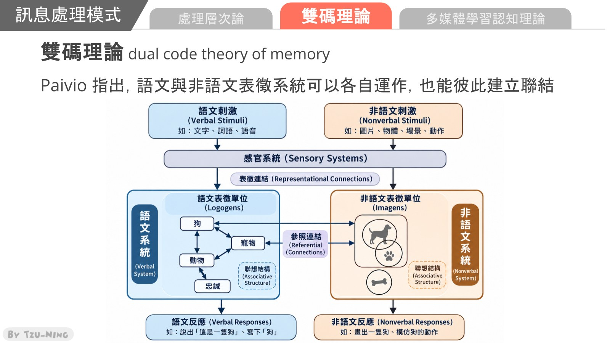
多媒體學習認知理論
多媒體學習認知理論（Cognitive Theory of Multimedia Learning, CTML）由 Mayer 提出，建立在雙碼理論與訊息處理模式之上：訊息有語文與圖像兩個通道，也同樣經過感官記憶、工作記憶與長期記憶。多媒體學習研究指出，當文字與圖片彼此相關、互相補充，且安排方式有助於理解時，結合文字與圖片通常比只有文字更能促進學習；若圖片與學習內容無關，或增加了不必要的認知負荷，則不一定有幫助。
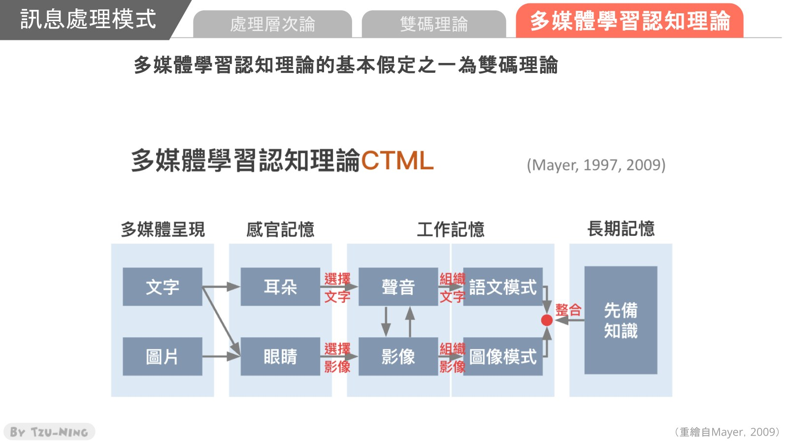
不同的呈現方式，在模型中走的路徑不同：
- 處理圖片：圖片由眼睛進入，在工作記憶中選擇注意到的影像，組織成圖像模式，再與長期記憶中的先備知識整合。
- 處理口語文字：老師說的話由耳朵進入，在工作記憶中選擇聽到的重點，組織成語文模式，再與先備知識整合。
- 處理印刷文字：課本上的文字雖然由眼睛進入、先以影像的形式進到工作記憶，但大腦會把它轉換成聲音，最後仍以語文模式處理。
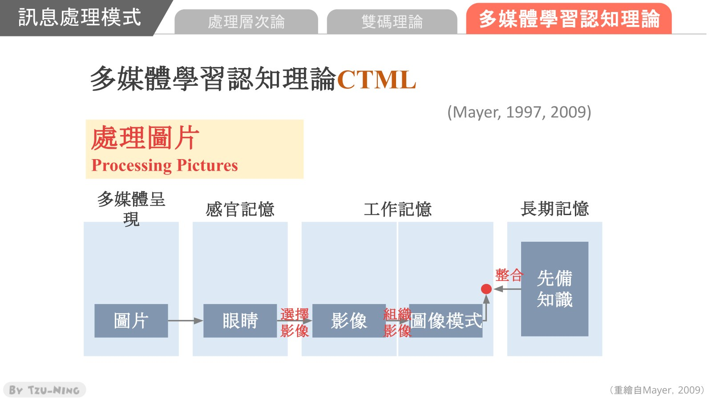
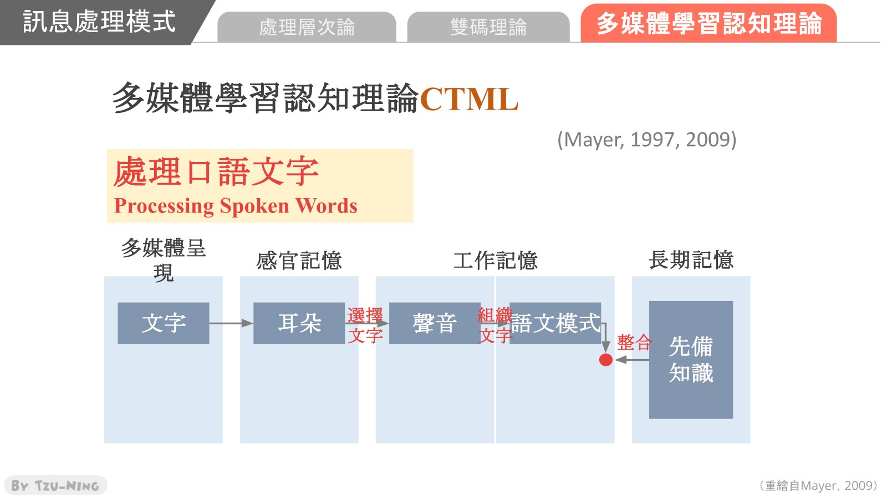
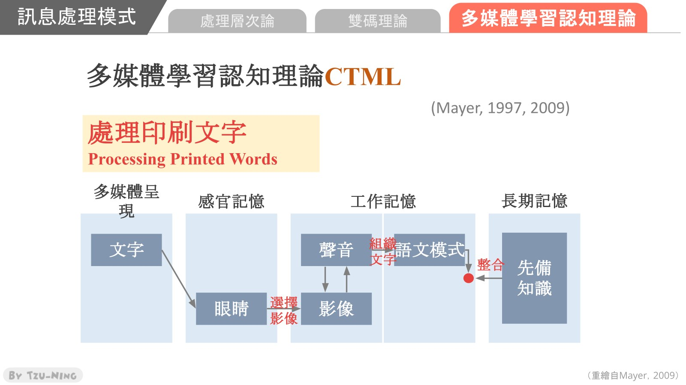
不論哪一種路徑，工作記憶的容量都有限，許多訊息在此競爭。教師要做的是提供有用、有效的訊息，不要讓無關的內容占滿學生的工作記憶。
人為什麼會遺忘：衰退與干擾
解釋遺忘的理論主要有兩種。衰退（decay）理論認為，記憶痕跡會隨著時間流逝而逐漸消失；干擾（interference）理論則認為，訊息與訊息之間彼此混淆或阻礙，使記憶無法順利提取。一般認為，干擾的效果比衰退更強。
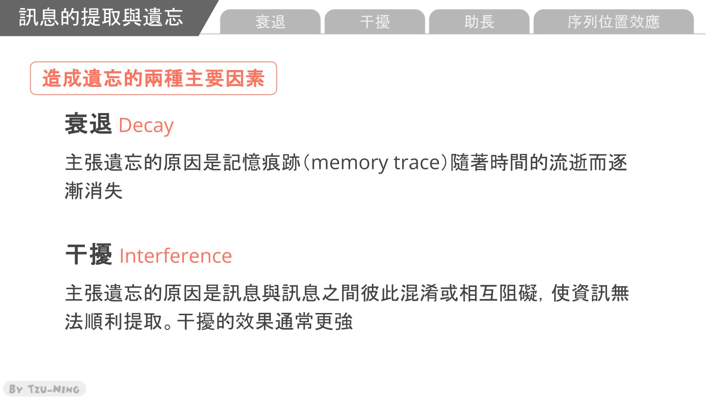
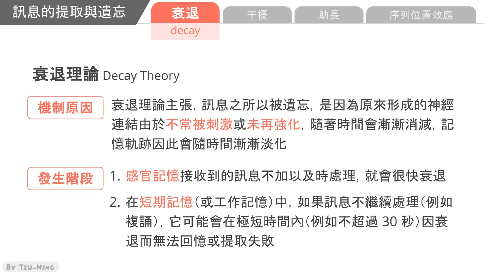
Brown-Peterson 作業
研究遺忘的經典作業是 Brown-Peterson 作業。螢幕先短暫出現三個英文字母（例如 KBR），接著出現一個三位數（例如 309），受試者要立刻從這個數字開始每次減 3 倒數（309、306、303……），一段時間後再回想剛才的三個字母。倒數這項任務的用意，是讓受試者無法複誦字母。研究者操弄倒數的時間長短，有時只倒數幾秒，有時倒數到 18 秒。
Peterson 與 Peterson（1959）的結果顯示：延遲 3 秒時還能記得約八成，延遲到 18 秒時記得不到兩成。他們認為這支持衰退理論：不能複誦時，延遲越久，記得越少。
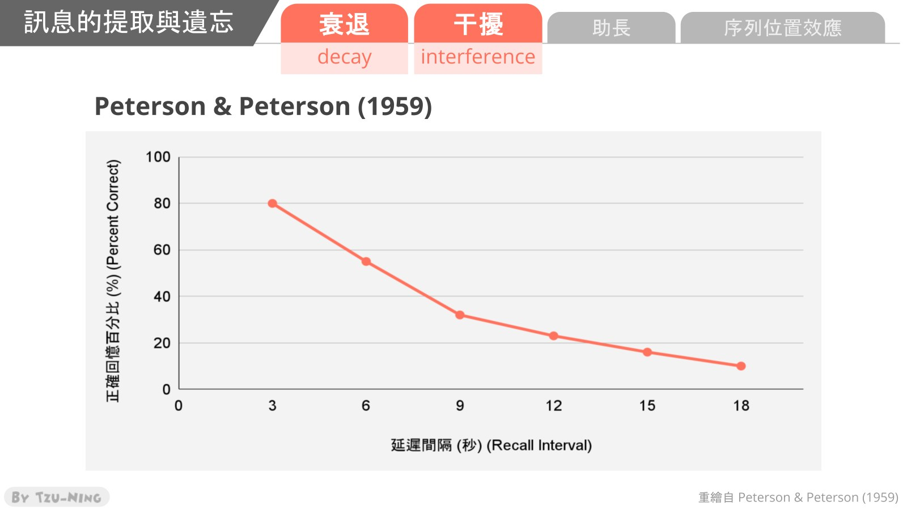
然而 Keppel 與 Underwood（1962）把每位受試者的第 1、2、3 次嘗試分開來畫，發現在第一次嘗試中，即使延遲了 18 秒，記憶表現仍然很好；到了第二、第三次嘗試，表現才急遽下降。同樣延遲 18 秒，第一次卻記得特別多，這很難用衰退解釋；比較可能的原因是，後面的嘗試受到前面記過的字母干擾。
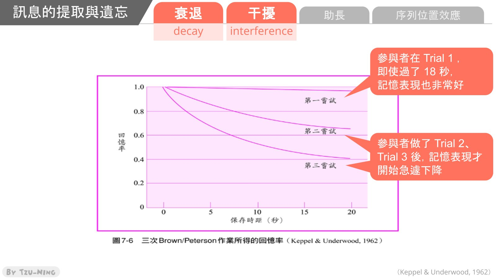
抑制與助長
干擾依方向分為兩種，名稱很容易混淆。倒攝抑制（retroactive inhibition），又譯後向干擾、逆向干擾，是後來學的干擾了先前學的：例如先學會寫 p，後來學 q，結果反而不太會寫 p。順攝抑制（proactive inhibition），又譯前向干擾，是先前學的干擾了後來學的：例如在臺灣學會左駕開車，到日本或英國改學右駕時，原本的習慣會干擾新的學習。記憶時可以抓住英文：retro 是往回（新學的影響舊的），pro 是往前（舊學的影響新的）。
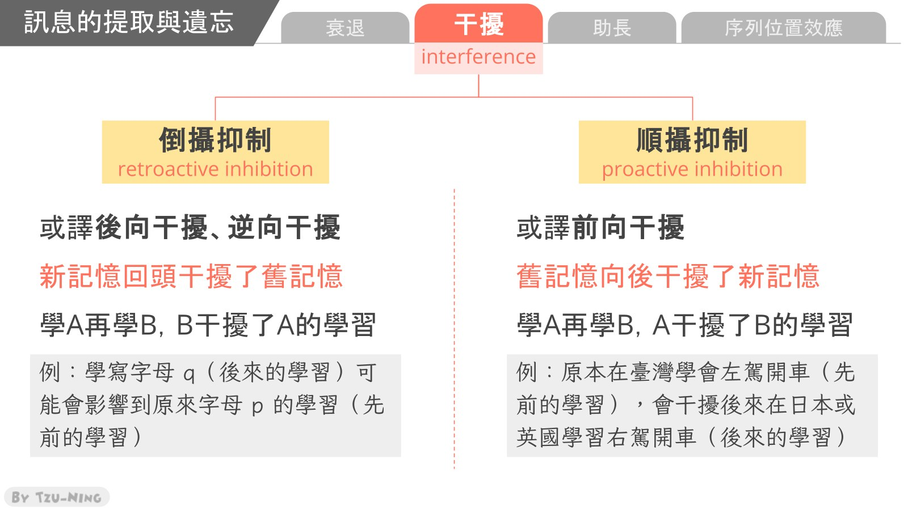
有干擾，也就有幫助。倒攝助長（retroactive facilitation）是後來的學習對先前的學習產生正向影響：例如學了二次函數之後，更清楚一次函數的線性特質與斜率的意義。順攝助長（proactive facilitation）是先前的學習對後來的學習產生正向影響：例如學了西班牙語，有助於學習語法、發音相近的義大利語。
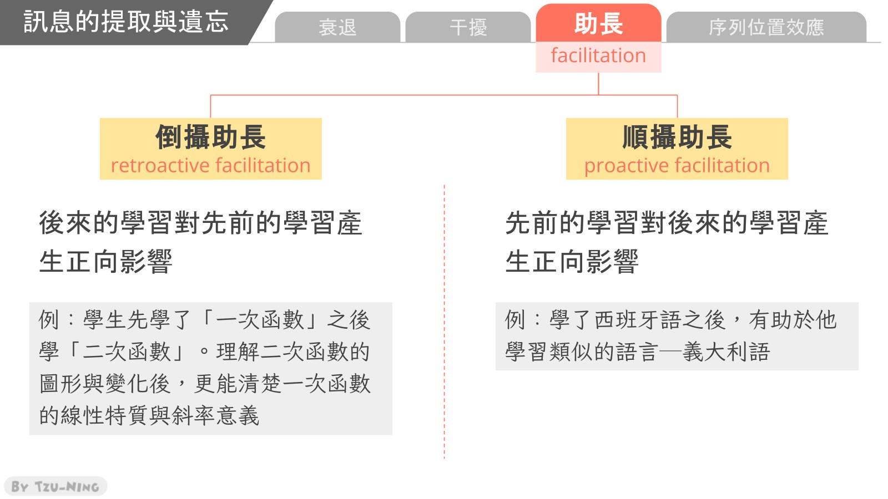
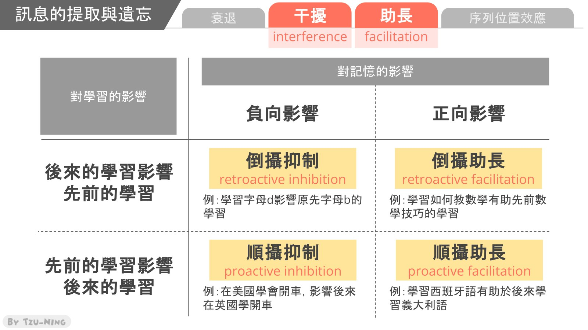
課堂請各組舉例，再一起判斷屬於哪一種，例如：
- 先學會自由式，再學仰式就快很多：先前的學習幫助後來的學習，屬於順攝助長。
- 先學好乘法，再學除法時更有概念：同樣是順攝助長。
- 九九乘法表沒有背好，影響後來的兩位數乘法：先前的學習對後來產生負向影響，屬於順攝抑制。
- 家長先教孩子把注音拆成三個音拼讀，到學校學習結合韻的拼法時反而混淆：同樣是順攝抑制。
同一種情況可能是順攝，也可能是倒攝，關鍵在於哪一個學習受到影響。以英文的 snack（點心）和 snake（蛇）為例：先學會 snack，後來學 snake 時唸不好，是舊的干擾新的，屬於順攝抑制；如果是學了 snake 之後，回過頭來把原本會唸的 snack 也唸錯了，就是新的干擾舊的，屬於倒攝抑制。
序列位置效應
課堂唸了一張有 23 項商品的購物清單，請大家聽完後寫下記得的項目，再逐項統計記得的人數。結果和研究一致：清單最前面與最後面的項目最容易被記住，中間的最容易忘記，這稱為序列位置效應（serial-position effect）。前段回憶率高稱為初始效應（primacy effect），後段回憶率高稱為新近效應（recency effect）。中間位置的項目若特別醒目、熟悉，或能與既有知識產生聯結，也可能比其他中間項目更容易被記住。
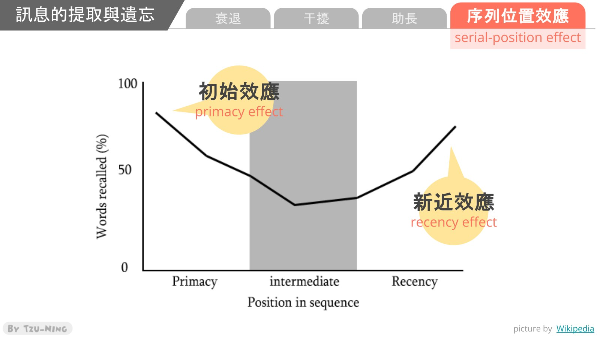
序列位置效應也提醒我們，評審或觀眾對表演順序的記憶有可能受到先後位置影響。不過，清單記憶研究不能直接證明抽到第一或最後就會得到較高評價；實際評分仍會受到表現品質、評分方式與其他情境因素影響。
序列位置效應也可以提醒教學者，課程開頭與結尾的訊息較容易被記住。教學者可將重要內容安排在段落的開頭或結尾，並視學生狀態適時調整活動與休息時間；不過，課程中段的注意力變化不能只用序列位置效應解釋。
記憶與研讀策略
記住訊息的方法包括：分散練習（時常提取，效果比集中練習好）、實作（learning by doing），以及產出（generation），也就是讓學生用自己的話說明、舉出自己的例子。
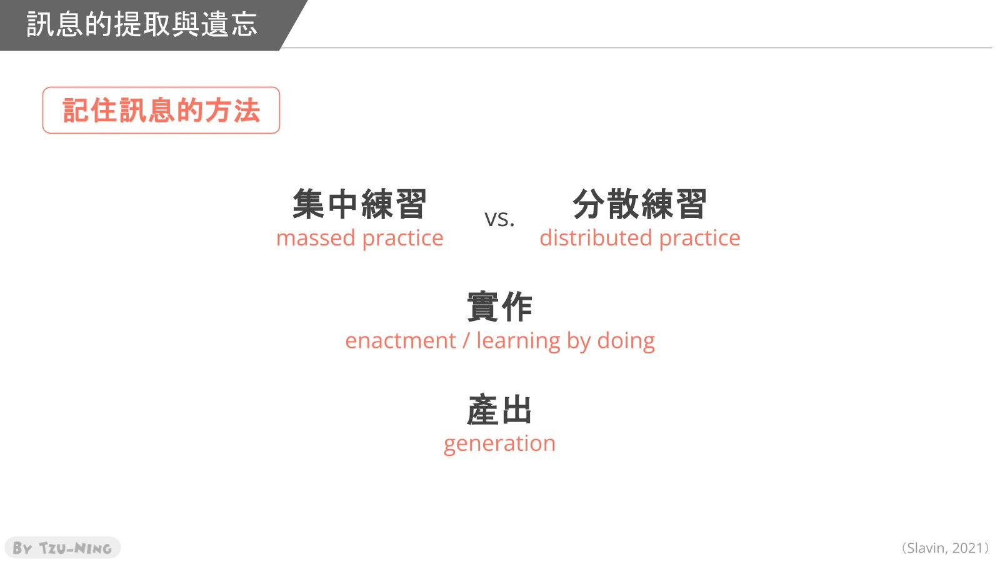
深化編碼與組織訊息
研讀策略的核心是深化編碼，讓課堂所學不只停留在工作記憶，而能進入長期記憶。可用的方法包括前導組體、類比、精緻化，以及組織訊息。
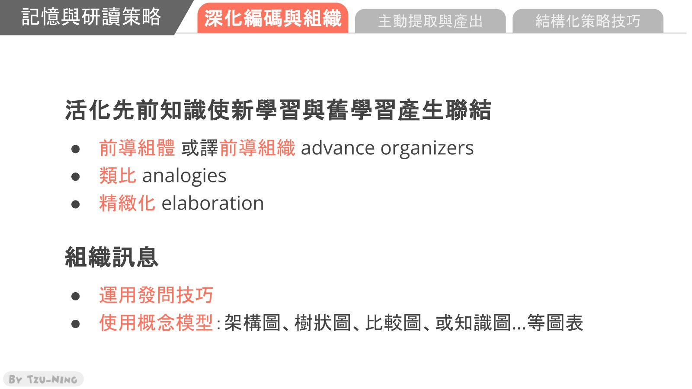
- 前導組體（advance organizers）：由 Ausubel 提出，先把學生引導到即將學習的內容，例如回顧上一堂課講到哪裡，或先提供這堂課的架構，讓學生知道目前學到整個知識架構的哪一部分。重點是新訊息要和學生已有的訊息產生關聯。
- 類比（analogies）：用比喻幫助理解抽象概念。例如短期記憶像電腦的記憶體（RAM），暫時存放；長期記憶像硬碟，可以存放比較久，但要使用時必須把檔案打開，也就是提取。前提是學生熟悉用來比喻的事物；如果學生不知道記憶體是什麼，這個比喻就無效。
- 精緻化（elaboration）：把要學的材料與自己的背景知識聯結，更深入地處理。課堂常請大家討論自己的經驗、舉出自己的例子，用意就是精緻化。
- 組織（organization）：有系統地排列、分類與連結零散的訊息。例如前面的 23 項購物清單，若依早餐、午餐、晚餐歸類，就容易記得多。
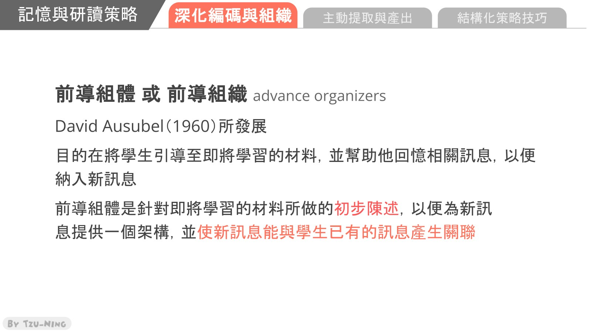
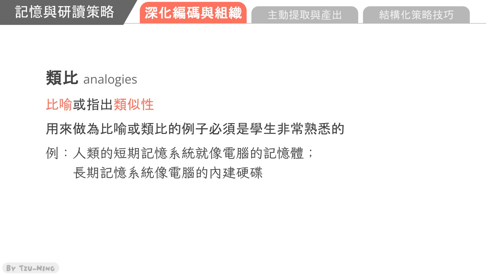
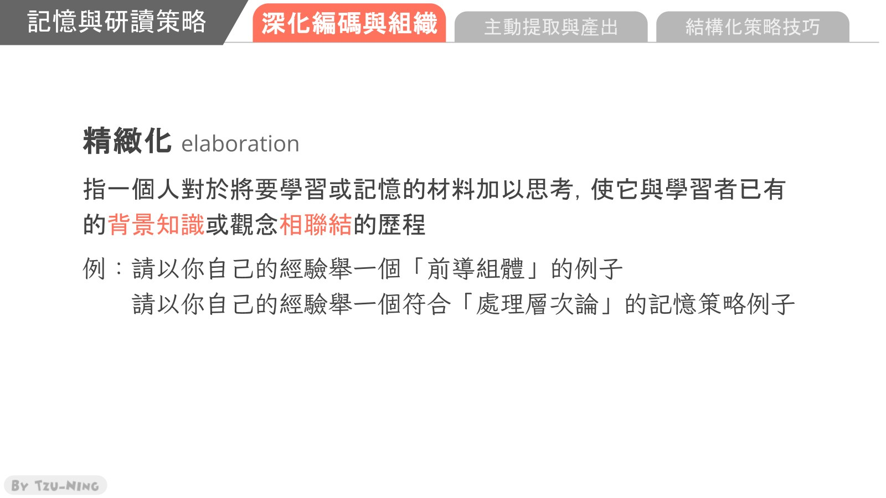
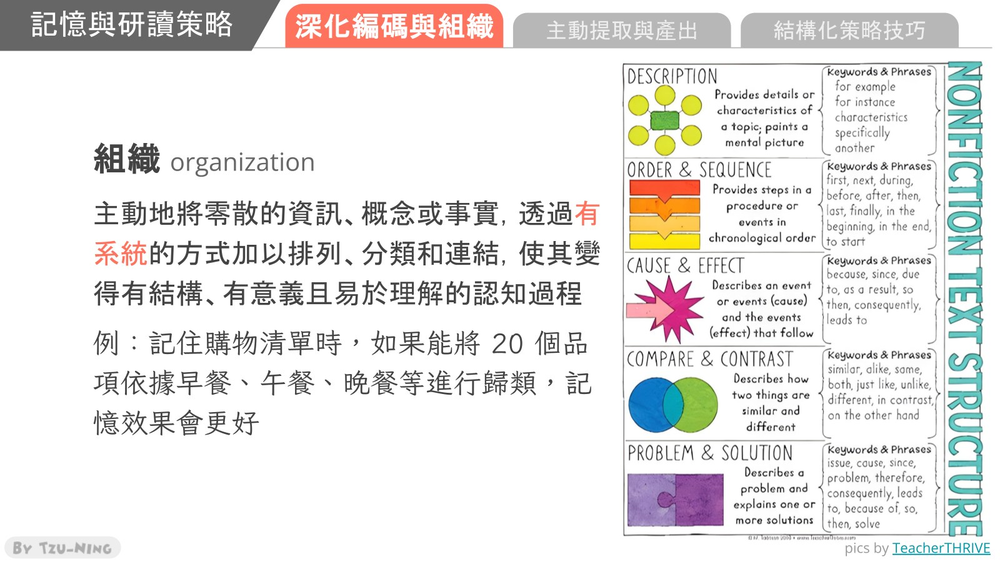
提取練習與產生式學習活動
提取練習（retrieval practice）白話來說就是做測驗：每做一次測驗，就是一次主動提取知識的練習，研究上稱為測驗效果（testing effect）。有效的提取練習是分散的，例如五天各讀十分鐘，通常比一天讀五十分鐘的效果好。
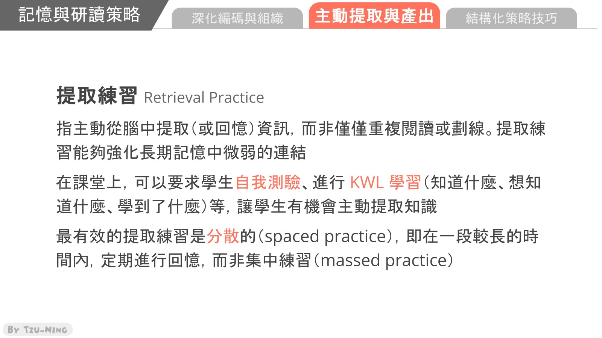
產生式學習活動（generative activity）是讓學生在學習過程中有所產出，例如看完一段影片後，用一句話解釋剛學到的內容；線上課程也能這樣設計。課堂中提到的例子包括：讓學生把流程的步驟畫出來，再一起重新組織；學生上台報告後，台下必須提問，也藉此檢驗報告者是否真的理解；在線上留言板就某個主題留言，學生為了留言必須整理內容。最後一例也有兩面：學生可以觀摩彼此的想法，類似 Bandura 所說的觀察學習，但也可能有人直接照抄別人的內容。
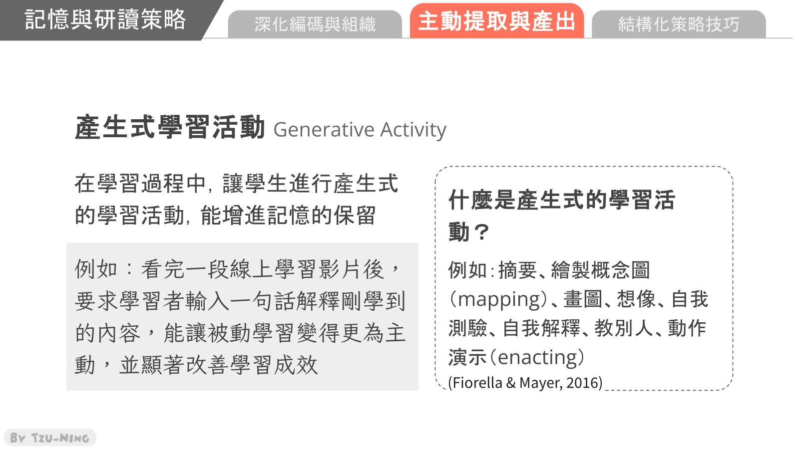
PQ4R 學習法提供結構化的讀書步驟：預覽（Preview）、提問（Question）、閱讀（Read）、思考（Reflect）、覆誦（Recite）、複習（Review）。這是理想的狀況，供參考。
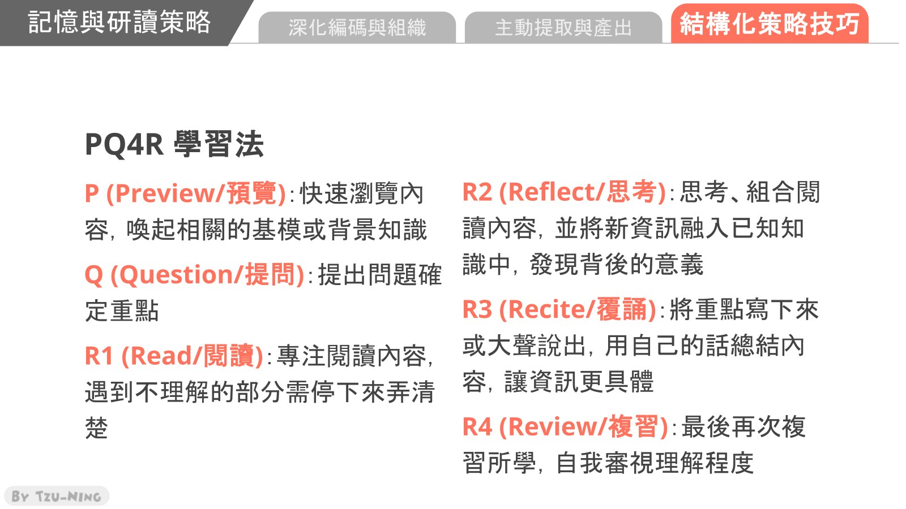
記憶術：字鉤法與位置法
有些東西還是需要記起來，常見的記憶術（mnemonic）很多，其中字鉤法與位置法比較不容易理解，課堂特別說明。
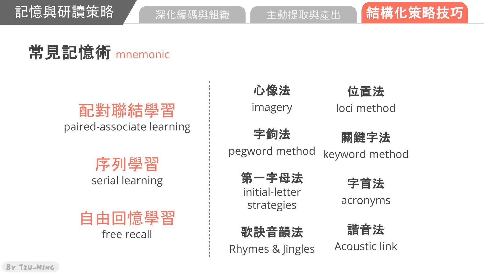
字鉤法
字鉤法（pegword method）是先在腦中設定好一組固定的「字鉤」，再把要記的東西一個一個掛上去。英文常用押韻的字鉤：one is a bun（小圓麵包）、two is a shoe（鞋子）、three is a tree（樹）、four is a door（門）、five is a hive（蜂巢）……。中文也可以自己設計，例如 1 像鉛筆、2 像牙齒、3 像耳朵。
字鉤熟了之後就不必再背，要記新東西時把它掛上去即可，而且畫面越誇張、越扯越好。例如要記牛奶、鑰匙和報告三件事：把牛奶放進小圓麵包裡，把鑰匙塞進鞋子裡，把報告掛在樹上。回想時順著字鉤，就能依序想起來。投影片的例子是用字鉤法記 12 對腦神經：第一對嗅神經，想像鼻子在聞麵包；第二對視神經，想像鞋子上長了眼睛；第三對動眼神經，想像長了眼睛的摩托車撞上樹。
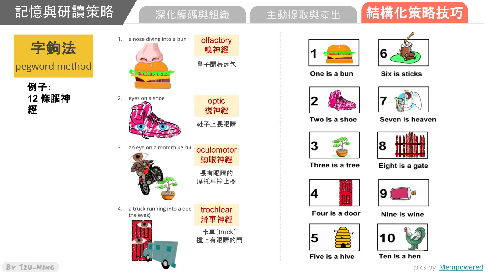
位置法
位置法（loci method）又稱記憶宮殿，世界記憶冠軍常用的就是這個方法。它和字鉤法很像，只是把字鉤換成一條自己熟悉的路線，例如回家後依序經過的玄關、沙發、電視，再把要記的東西放在路線上的各個位置。例如要記牛奶、電池與雨傘：一進門踩到牛奶滑倒，坐上沙發被電池扎到，打開電視就有雨傘噴出來。路線可以無限延伸，所以能記很多東西。
路線不一定要是走路的路徑，也可以用自己的身體，例如從頭髮、眼睛到鼻子：頭髮像瀑布一樣流下來是水星，眼睛冒火（火眼金睛）是金星，鼻子呼吸到空氣是唯一有空氣的地球……用來依序記住八大行星。字鉤法與位置法的共同點是：先記熟一組字鉤或位置，再把要記的東西套上去，並搭配誇張的畫面，同時運用了心像。
記憶術真的有效嗎？
Roediger（1980）比較了幾種記憶術的效果。單純複誦的回憶率曲線就像序列位置效應，中間位置的項目比較記不住；使用位置法、字鉤法等心像方法時，曲線比較平，效果比單純複誦好一些。不過，這類研究記憶的多半是一個一個的單字，放到真正完整的學習情境中，效果可能有所出入。
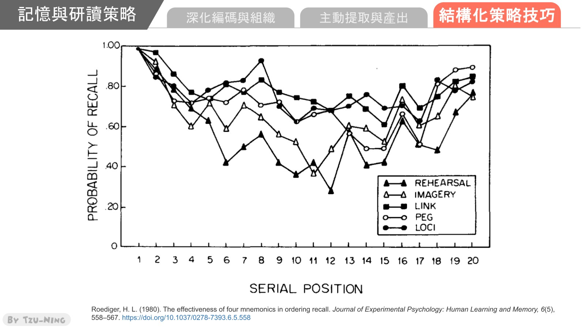
後設認知
前面談的大多是比較基本的認知歷程，接下來是比較高階的後設認知（metacognition）。認知是個體經由意識活動對事物認識與理解的心理歷程，學習時的推理、思考、解題都屬於認知歷程。後設認知的 meta 不是社群媒體的 Meta，而是「後設」：對自己認知歷程的認知。也就是跳出來看見自己正在怎麼想，知道自己哪裡做得不好、該怎麼調整，並知道用什麼方法可以幫助自己學習。
教學上也希望學生具備後設認知：知道自己正在思考、解題、推理，知道自己哪些科目比較好、哪些學習有困難，並知道怎麼幫助自己。
教育神經科學
神經元透過樹突與細胞本體接收其他神經元的訊息，訊息沿著軸突傳遞，再由軸突末端透過突觸（synapse）傳給其他細胞。突觸是神經元之間的空隙，神經傳導物質在其中傳遞訊息。某個腦區的突觸聯結越多，表示那一區的神經傳導越有效率；所以想誇獎別人聰明，有一個「高階」的說法是：「你的突觸長得很好。」
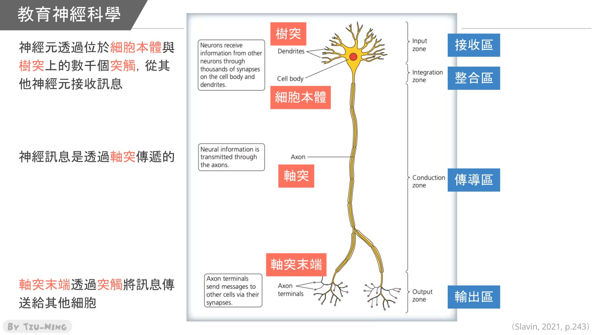
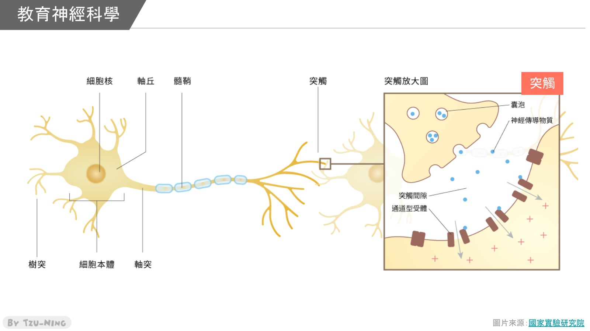
不同的腦區負責不同的功能。前額葉除了與情緒有關，更像是掌控全局的中央；顳葉與聽覺有關（「聶」字有三個耳朵，可以幫助記憶）；頂葉與感覺有關；枕葉在後腦勺枕頭的位置，與視覺有關。前面提過的海馬迴則與記憶有關。網路上的「3D Brain」網站可以轉動大腦模型，查看各腦區的位置與功能。
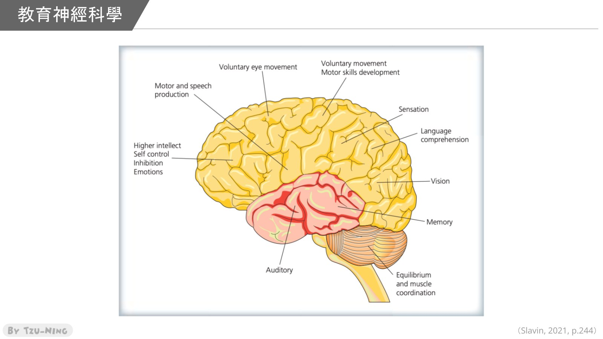
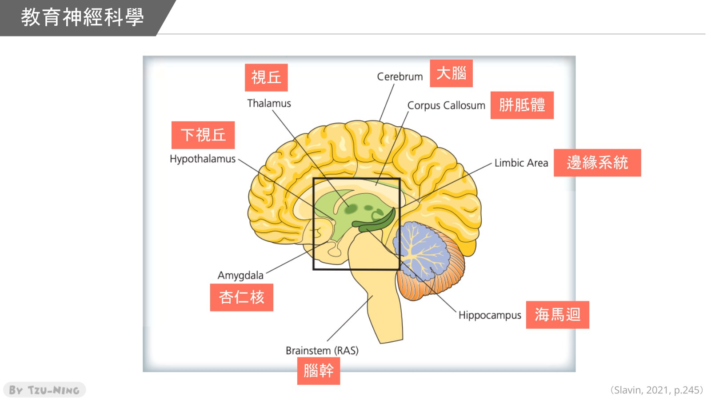
專家與新手的大腦
一項研究以功能性磁振造影（fMRI）比較一位藝術家與一般人畫肖像時的大腦活動。兩人一開始都是後腦的視覺區活躍，因為要先看；接下來，一般人仍以後方的視覺區與負責動手的區域為主，藝術家活躍的卻是右前額葉。藝術家腦中已有關於繪畫的知識與方法，由前額葉像中央控制一樣主導。由此可知，專家與新手大腦活躍的部位並不相同。
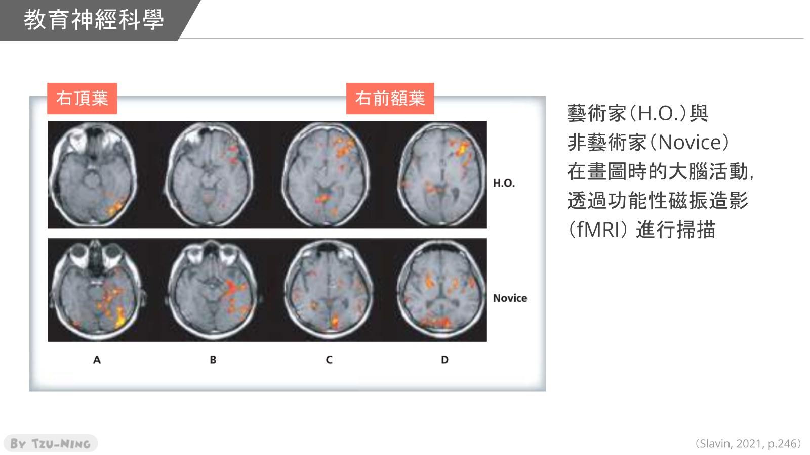
再看一個例子：倫敦計程車司機需要長期熟記街道與路線。Maguire 等人（2000）的研究發現，他們的後側海馬迴灰質較多，且與駕駛年資相關，顯示長期的導航經驗可能伴隨大腦結構變化。不過，最初的研究無法單獨證明是訓練造成；後續追蹤研究則提供了更多支持。這個例子說明，學習與專業經驗可能反映在大腦變化上。
突觸修剪與神經可塑性
嬰幼兒的大腦會快速形成許多突觸，之後逐漸調整與修剪部分神經連結。不同腦區發展的時間不一，經驗也會影響連結的變化；但不是常用的就一定留下、不常用的就一定消失。
神經連結被修剪後，大腦仍然能改變。透過新的學習與練習，相關連結可能變得更穩固，也可能形成新的連結。大腦會隨經驗調整的能力稱為神經可塑性（neuroplasticity）。這與「能力可以透過學習發展」的成長型思維相呼應，但不代表每一條被修剪的連結都會長回來。
大腦迷思
以下三種常見的說法，現在都被列為大腦迷思：
- 左腦負責分析、右腦負責創造：實際上不論分析或創造，都需要左右腦共同運作。
- 人只運用了大腦容量的十分之一：實際上整個大腦都要運作，人才能做事。
- 學習風格分為視覺型、聽覺型、動覺型：第 1 次上課已經說明，這也是一種迷思。
行為取向：學習的定義與 Pavlov 的古典制約
這次上課最後開始介紹行為取向學習理論。提到行為取向，常想到的學者有 Pavlov、Watson、Skinner，以及常被遺忘的「教育心理學之父」Thorndike。這幾位學者的生命故事都很精彩。
學習的定義
學習是個體透過經驗，使其行為或內在心智歷程產生較為持久性改變的過程（Slavin, 2021）。這句話可以拆成三個部分：方式是透過經驗，包括親身經歷、觀察他人或閱讀；成果是外顯行為或內在心智（例如態度、價值觀）的改變；時效是改變要相對持久。
用反例來判斷：平常不太說話的人，喝了酒之後變得很健談，但酒醒就恢復原狀，這不是學習；如果是刻意學習如何與人互動，那就是學習。生病時感到疲累，恢復後就回來了，也不是學習。長高、青春期變聲雖然是持久的改變，卻不是透過經驗，而是生理成熟（maturation）的結果，所以也不是學習。
Pavlov 其人
巴夫洛夫（Ivan Pavlov）常被放在心理學家之列，但他本人自認是生理學家。當時的心理學多談內省，他認為不夠科學，重視的是可以觀察、可以量測的資料。他獲得 1904 年諾貝爾生理學或醫學獎，原因也不是古典制約，而是消化腺的研究：他發展出能在不干擾生理功能的情況下取得消化液、觀察消化過程的方法。他也是第一位獲得諾貝爾獎的俄國科學家。
古典制約的發現，起於消化腺研究中的一個意外。狗看到或聞到食物會流口水，這很自然；但 Pavlov 發現，幾次之後，狗還沒看到、也沒聞到食物，只要聽到助理開門的聲音或腳步聲，就開始流口水。這成了古典制約研究的開端，之後他刻意以鈴聲、節拍器等刺激進行實驗。
Pavlov 的軼事很多。據說他曾販售從狗身上取得的胃液，當作腸胃藥，賣出上千瓶，以支撐研究室的經費。他極為重視規則：外面發生革命，助理也不能遲到；助理不能說「狗想吃肉」「狗很開心」，只能說出現了什麼刺激、分泌了多少唾液。為了不讓腳步聲等無關刺激影響實驗，他打造了隔音的實驗室，助理進出要穿軟底鞋。他曾公開批評政府，卻因是全國知名的諾貝爾獎得主而未受打壓。據說他臨終前還請助手在床邊記錄自己死亡的過程，並請助手告訴前來探望的人：「Pavlov 正在忙，他正忙著死去。」他的故居莊園現已成為博物館，開放參觀。
古典制約的歷程
制約前：食物是非制約刺激（US），狗看到食物流口水是天生的非制約反應（UR）；鈴聲對狗沒有影響，是中性刺激（NS）。制約中：讓鈴聲與食物配對出現，搖鈴後立刻給食物，狗看到食物仍然流口水。重複幾次之後，到了制約後，只要聽到鈴聲，不給食物狗也會流口水。此時鈴聲已經從中性刺激變成制約刺激（CS），因鈴聲而流口水則是制約反應（CR）。
學校裡也常出現古典制約。很兇的老師讓學生害怕，這不必學習（US→UR）；數學這一科原本沒有特別的感覺（NS）。這位很兇的老師教的正是數學，兩者每次一起出現；經過一段時間後，可能兩次、五次，也可能半個學期，學生即使沒有遇到這位老師，一碰到數學就害怕。此時數學成了制約刺激，害怕則是制約反應。
諾貝爾獎網站有一個讓狗完成古典制約的小遊戲。玩的時候會發現，搖完鈴要很快給食物，間隔太久就無法建立制約：配對出現的兩個刺激，時間上不能相隔太遠。
Watson 的小艾伯特實驗
華生（John B. Watson）是行為主義另一位重要的大師。Pavlov 的研究對象是狗，Watson 則想知道古典制約能不能用在人身上，例如恐懼是不是可以學來的。
1920 年，Watson 與助手 Rosalie Rayner 以一名嬰兒「小艾伯特」（Little Albert）進行實驗。Watson 當時在約翰霍普金斯大學附設醫院的研究室工作，艾伯特的母親是醫院裡的奶媽；據說研究者為這次實驗只付了一美元的報酬。研究者先讓艾伯特看猴子、狗、兔子等各種動物，確認他沒有特別害怕，最後選定小白鼠作為中性刺激。接著，每當艾伯特伸手要摸小白鼠，研究者就用鐵鎚敲擊金屬棒，發出巨大聲響嚇他。Watson 與 Rayner 報告指出，經過數次配對後，艾伯特看到小白鼠時出現害怕、退縮等反應；研究者也將他對兔子、毛皮、聖誕老人的白鬍子等刺激的反應解讀為刺激類化。不過，後續研究者對這些反應是否足以證明制約成功，以及類化範圍是否如研究者所述，提出了質疑。這個實驗也違反了各種研究倫理，是心理學史上最具爭議性的實驗之一。
依 Watson 與 Rayner 的解讀，用古典制約來分析：巨大的聲響是非制約刺激，害怕、退縮、哭泣是非制約反應；原本不怕、甚至想摸的小白鼠是中性刺激。制約中，小白鼠與巨響配對出現；制約後，小白鼠變成制約刺激，光是看到小白鼠就害怕，這份害怕就是制約反應。至於對兔子、毛皮等相似的東西也感到害怕，研究者解讀為把反應類推到相似的刺激上，稱為刺激類化（generalization）。
本次重點整理
- 訊息處理模式把人腦比作電腦：刺激進入感官收錄器，經過注意進入工作記憶，經過編碼進入長期記憶；處理新訊息時也要從長期記憶提取背景知識。任何一關沒通過，訊息就會遺失。
- 感官收錄器容量大、時間極短，沒有注意就會消失；引起注意的方法要與教學內容相關。
- 工作記憶容量有限：Miller（1956）整理立即記憶廣度研究，指出某些情境下約為 7±2；Cowan（2001）在設法排除複誦與意元集組時，估計注意焦點約可維持 4 個單位。兩者是不同條件下的估計。意元集組與自動化都能減輕工作記憶的負荷。
- 長期記憶容量大、保存久，想不起來多半是缺乏提取線索或受到干擾。知識分為陳述性（情節記憶、語意記憶）、程序性與條件性知識。
- 處理層次論：思考材料的意義通常比只注意字形或語音更有助於記憶，研讀時可試著解釋概念、連結舊知識，而不只反覆看或唸。雙碼理論：語文與影像兩套系統，同時編碼較易回憶。多媒體學習：文字與圖片彼此相關、互相補充且安排得當時，通常比只有文字更能促進學習；無關或增加不必要負荷的圖片則不一定有幫助。
- 遺忘的兩種解釋是衰退與干擾，干擾的效果通常較強。倒攝是新學的影響舊學的，順攝是舊學的影響新學的；負向影響稱為抑制，正向影響稱為助長。
- 序列位置效應：清單最前面（初始效應）與最後面（新近效應）的項目最容易記得；中間項目若特別醒目、熟悉或能與舊知識聯結，也可能被記住。
- 研讀策略：分散練習、實作、產出；前導組體、類比、精緻化、組織；提取練習（測驗效果）、產生式學習活動、PQ4R。
- 字鉤法與位置法都是先記熟一組字鉤或位置，再把要記的東西搭配誇張的畫面套上去。
- 後設認知是對自己認知歷程的認知：知道自己正在怎麼想，並能調整與運用策略。
- 嬰幼兒的大腦快速形成突觸後，會逐漸調整與修剪部分連結；大腦會隨經驗調整，稱為神經可塑性，但不代表被修剪的連結都會長回來。左右腦分工、只用十分之一的大腦、學習風格都是大腦迷思。
- 學習是透過經驗，使行為或心智產生較為持久的改變；成熟造成的改變不是學習。
- 古典制約：中性刺激與非制約刺激配對出現，之後中性刺激成為能單獨引發反應的制約刺激。Watson 與 Rayner 將小艾伯特實驗解讀為恐懼制約與刺激類化的例子。不過，這項研究只有一名嬰兒，研究程序與觀察資料也有限；後續學者重新檢視原始報告與影片後，對制約是否成功、恐懼類化是否成立提出質疑。因此，這項研究適合作為古典制約的歷史案例，不宜視為恐懼制約的確切證據。
資料來源
- 王孜𡩋，〈認知取向學習理論〉與〈行為取向學習理論〉課堂講授，2026 年 11 月 8 日。
- 王孜𡩋，〈認知取向學習理論〉課堂投影片（2026 年 11 月 7 日更新版）與〈行為取向學習理論〉課堂投影片（2026 年 11 月 1 日更新版），國立臺灣師範大學教育心理與輔導學系。文中圖片皆取自這兩份投影片。
- 投影片標註的主要文獻：Atkinson & Shiffrin (1968)；Cowan (2001)；Craik & Tulving (1975)；Fiorella & Mayer (2016)；Keppel & Underwood (1962)；Maguire et al. (2000)；Mayer (1997, 2009)；Miller (1956)；Peterson & Peterson (1959)；Roediger (1980)；Slavin (2021)；Sternberg & Williams (2011)；Woolfolk (2025)；張春興 (2007)。